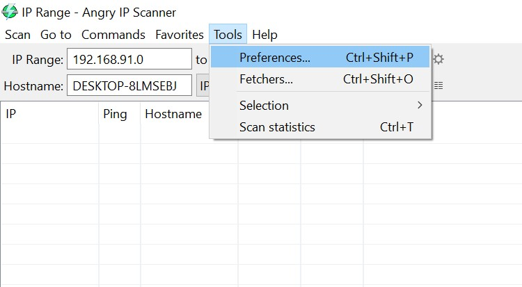
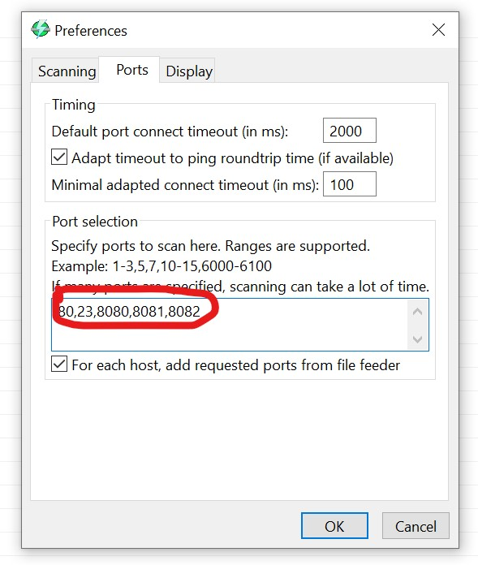
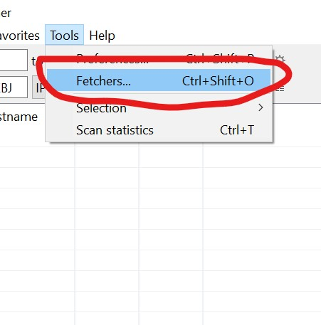
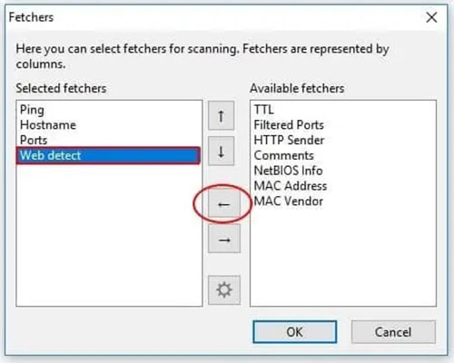
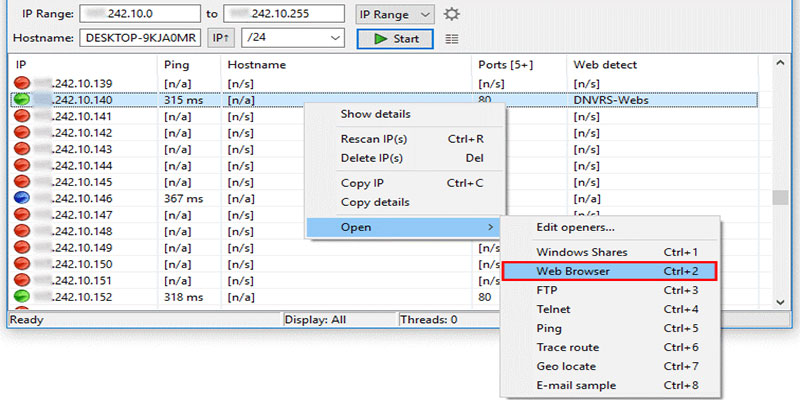
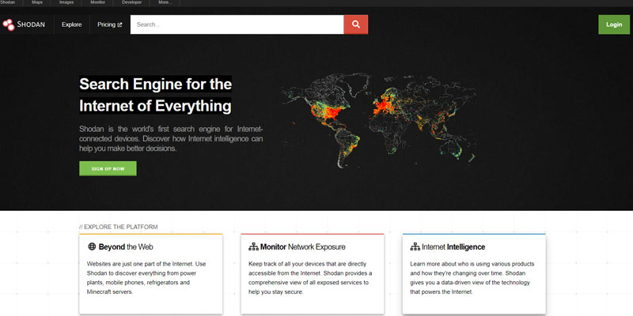

با نام خدای علم و تکنیک // گویم به شما سلام و تبریک
با استفاده از برخی از نرم افزار ها می توان IP های دوربین های مداربسته را به دست آورد که یکی از آن ها Angry Ip Scanner هست.با استفاده از این نرم افزار ها میتوانید دوربین های مدار بسته را هک کنید.برای ادامه مراحل زیر را دنبال کنید
1.ابتدا باید پورت ها و Fetcher ها کانفینگ یا پیکربندی شوند. طبق تصویر زیر کانفینگ را انجام دهید
   2. پس از شناسایی دستگاه یا دوربین مداربسته بر روی آن کلیک راست کنید. سپس بر روی گزینه Web Browser کلیک کنید. پس از آن دستگاه مورد نظر باز می شود. در این قسمت IP دستگاه به دست آمده و باید توسط یوزر و پسورد وارد شوید.
استفاده از برنامه Shodan
Shodan همانند گوگل یک موتور جستجوگر است. برای استفاده از این موتور جستجو مراحل زیر را طی کنید.
.جستجوگر شودان را باز کرده و یک برند دوربین مداربسته را در آن جستجو کنید. همچنین می توانید به جای برند دوربین مداربسته کلمه Webcam را نیز جستجو کنید.
.با جستجوی برند مورد نظر لیستی از دوربین های این برند نمایش داده می شود. با کلیک بر روی هر یک از دوربین های مداربسته به صفحه ورود آن وارد می شوید. در این قسمت اگر کاربر رمز و نام کاربری پیش فرض را تغییر نداده باشد می توانید با وارد کردن آن به اطلاعات دوربین دسترسی پیدا کنید.
